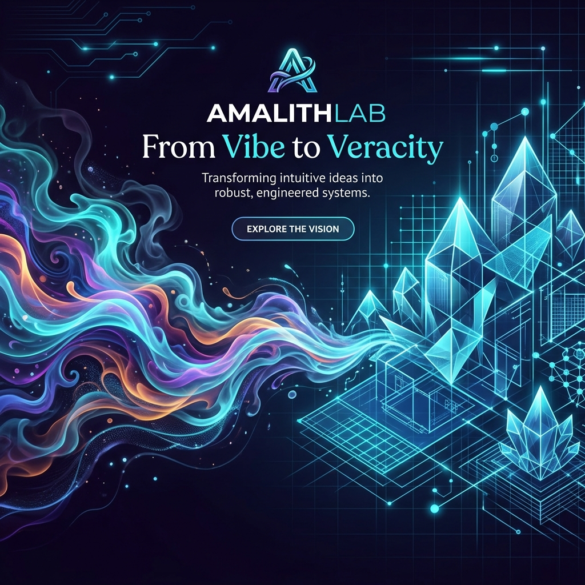

Pioneering the future of AI-driven software engineering, multi-agent swarms, and codebase verification through rigorous Chain-of-Thought frameworks.

Intuitive, prompt-driven AI coding that captures high-level intent. It's lightning-fast and highly creative, but fundamentally lacks the formal logic, testing structure, and security guarantees required for production-grade software.
Our research introduces a Chain-of-Thought (CoT-Vibe) orchestration system that bridges this gap. It translates intuitive instructions into highly validated, secure, and robust systems using autonomous agent verification loops.
Experience research-driven orchestration in action. Aetherproof is a state-of-the-art, multi-agent autonomous IDE designed for robust execution, formal check cycles, and native development safety.
Available now on GitHub Releases (latest-dev).
class AetherproofSwarm {
constructor(mode = 'document') {
this.mode = mode;
this.safeguards = true;
}
async executeTask(goal) {
const plan = await this.architect.plan(goal);
const verified = await this.critic.review(plan);
return verified ? 'Veracity Achieved' : this.refine();
}
}Our work is rooted in rigorous academic research published by leading researchers in AI and Cybersecurity.
A Chain-of-Thought Framework for AI-Driven Software Engineering and Security
Read the PaperWe believe the future of AI coding belongs to everyone. Aetherproof is an open-source initiative, and we welcome contributions from developers, researchers, and enthusiasts worldwide.
Contribute on GitHubUNC Charlotte
PhD Student, UNC Charlotte